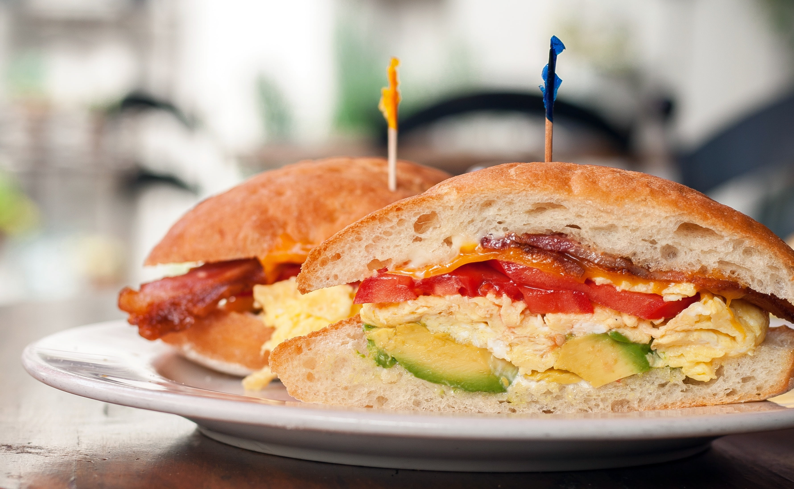

Home
Sandwich Recipe

Description
Sandwiches are amazing. Rich with flavor, protein and veggies! They come in all sizes, shapes and forms. This recipe guides you into making the best sandwich you've ever had!
Ingredients
- 2 slices white bread
- 1/2 tbsp butter
- 200 grams turkey bacon
- 1/2 avocado
- 4 eggs
- 2 tbsp oil
Steps
- Cook the turkey bacon until crispy using 1 tbsp oil.
- (Optional) Season the bacon with salt and pepper.
- Set the bacon aside, and the rest of the oil and fry the bacon to your liking.
- (Optional) Season the eggs with salt.
- Put the avocado in a bowl and mash it with a fork.
- Butter the bread and toast them in the pan.
- Spread the mashed avocado on the bread and add the cooked turkey bacon and eggs.
- Enjoy your protein packed sandwich.